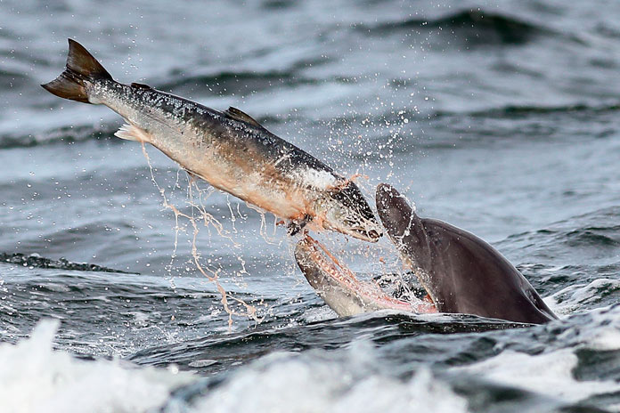

La reproducción de los delfines resulta un misterio para la mayoría de los seres humanos, ya que el proceso de apareamiento ocurre bajo el agua. Sin embargo, el proceso es similar al de otros mamíferos: las hembras presentan un periodo de ovulación tras el cual se aparean con los delfines macho con el objetivo de fecundar el óvulo. Una vez fecundado, la cría empieza a formarse dentro del vientre de la madre y cuando se encuentra completamente desarrollada inicia la fase del parto. Antes de permitir que el macho se acerque, es necesario que se realice un cortejo. Este cortejo consiste en llevar a cabo distintas formas de nado alrededor de la hembra, las cuales, a primera vista, podrían parecer juegos bajo el agua. Durante este cortejo, es habitual que varios machos compitan por una misma hembra, llegando a agredirse para demostrar, también, su fuerza. Cuando la hembra acepta aparearse con el macho, acerca a ella su órgano sexual, ya que cuentan con pene y testículos, mientras que las hembras poseen un orificio vaginal. Luego, unen sus vientres para llevar a cabo el acto sexual y realizar la fecundación; este proceso toma pocos segundos y puede repetirse varias veces con la misma hembra.

La alimentación de los delfines puede variar dependiendo de la región geográfica que habiten. De todas formas, algunas de sus presas favoritas son los calamares, arenques, bacalaos o caballas, as&iaccte; como las tortugas de mar, los crustáceos o el plancton. Además, cabe destacar que este tipo de mamífero consume hasta un 10 % de su peso corporal de forma diaria, por lo que tienen que cazar cada día para alimentarse. No hay mucha diferencia entre lo que comen los delfines recién nacidos y otros animales mam&iacte;feros. De hecho, los 18 primeros meses de vida se alimentan de la leche materna rica en grasas y proteínas que favorecerá su crecimiento y desarrollo. Una vez superada esta etapa, comienzan a consumir otros alimentos de forma progresiva hasta que son completamente autónomos para cazar por su cuenta. La ecolocalización es un sistema que emplean los delfines para crear ondas de sonido que rebotan contra los objetos y el fondo marino, lo que les permite detectar presas y reconocer el área en el que se encuentran. Usando esta técnica, estos animales son capaces de detectar peces u otros animales incluso en condiciones de escasa luz.